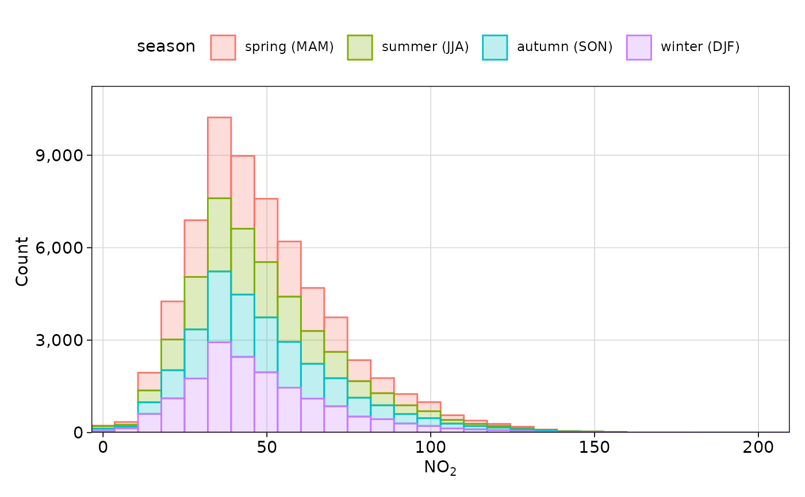

This function plots the distribution of one or more pollutants or other variables as a histogram, kernel density estimate function, or empirical cumulative distribution function. The choice of method comes with trade-offs; for example, histograms are often more easily interpretable but can easily get cluttered and are heavily dependent on bin width, whereas density functions appear 'cleaner' with many overlapping groups, but can be more challenging to interpret.
Usage
distPlot(
mydata,
pollutant = "nox",
method = c("histogram", "freqpoly", "density", "ecdf"),
binwidth = NULL,
bins = 30,
position = NULL,
log = FALSE,
group = "default",
type = "default",
cols = "hue",
theme = "default",
key.title = group,
key.position = "top",
ref.x = NULL,
ref.y = NULL,
auto.text = TRUE,
plot = TRUE,
...
)Arguments
- mydata
A data frame.
- pollutant
Name of the pollutant(s) to plot contained in
mydata.- method
One of:
"histogram","freqpoly","density", or"ecdf". Note that"freqpoly"is effectively a line chart equivalent of a histogram, and may appear less cluttered with many groups.- binwidth, bins
Used when
method = "histogram"or"freqpoly".binwidthsets the width of the bins.binssets the number of bins, defaulting to30.binsis overridden bybinwidth.- position
A string representing a
ggplot2"position" - seeggplot2::position_identity()and similar functions. WhenNULL, will use"stack"for histograms and"identity"for other methods. Also useful is"fill"in conjunction with thegroupargument which will 'normalise' the y-axis to show a percentage rather than an absolute count or density estimate. Not used whenmethod = "ecdf", which must be"identity". Note that density functions will use 'count' over 'density' for non-identitypositions.- log
Should the x-axis appear on a log scale? The default is
FALSE. IfTRUEa well-formatted log10 scale is used.- group
This sets the grouping variable to be used. For example, if a data frame had a column
sitesettinggroup = "site"will plot all sites together in each panel. Passed tocutData().- type
Character string(s) defining how data should be split/conditioned before plotting.
"default"produces a single panel using the entire dataset. Any other options will split the plot into different panels - a roughly square grid of panels if onetypeis given, or a 2D matrix of panels if twotypesare given.typeis always passed tocutData(), and can therefore be any of:A built-in type defined in
cutData()(e.g.,"season","year","weekday", etc.). For example,type = "season"will split the plot into four panels, one for each season.The name of a numeric column in
mydata, which will be split inton.levelsquantiles (defaulting to 4).The name of a character or factor column in
mydata, which will be used as-is. Commonly this could be a variable like"site"to ensure data from different monitoring sites are handled and presented separately. It could equally be any arbitrary column created by the user (e.g., whether a nearby possible pollutant source is active or not).
Most
openairplotting functions can take twotypearguments. If two are given, the first is used for the columns and the second for the rows.- cols
Colours to use for plotting. Can be a pre-set palette (e.g.,
"turbo","viridis","tol","Dark2", etc.) or a user-defined vector of R colours (e.g.,c("yellow", "green", "blue", "black")- seecolours()for a full list) or hex-codes (e.g.,c("#30123B", "#9CF649", "#7A0403")). Alternatively, can be a list of arguments to control the colour palette more closely (e.g.,palette,direction,alpha, etc.). SeeopenColours()andcolourOpts()for more details.- theme
A string representing an overall plot theme, defaulting to
"default". This option makes sweeping changes to non-data plot features such as fonts, colours, line widths, and so on, and may also change default arguments likecolsif not set by the user. Can also take aggplot2::theme()object, which will be used to modify the"default"theme. Pre-set options include:"default", a lattice-inspired theme resembling the traditionalopenairlook, with structured panels and visible gridlines."dark", a dark-background variant of the default theme, designed for presentations and low-light viewing, using high-contrast text and colour palettes optimised for visibility against dark panels."modern", a minimalist, contemporary theme inspired by tools such as Plotly and Observable Plot, with reduced visual clutter, horizontal emphasis in gridlines, a clean legend style, and typography suited to dashboards and reports."soft", a low-contrast, 'editorial' theme with warm background tones, subtle gridlines, and gently desaturated colours, designed for reports and publication-style figures, particularly where a calmer appearance improves readability."print", a strictly greyscale theme optimised for black-and-white reproduction, with stronger structural elements such as clearer gridlines and axis definitions to ensure good contrast and readability in printed or photocopied outputs.
Please note that if a global theme is set with
ggplot2::theme_set()to anything other than the defaultggplot2::theme_grey(), the selected openair theme will not be fully applied; instead, only minimal adjustments (such as legend positioning) will be made.- key.title
Used to set the title of the legend. The legend title is passed to
quickText()ifauto.text = TRUE.- key.position
Location where the legend is to be placed. Allowed arguments include
"top","right","bottom","left"and"none", the last of which removes the legend entirely.- ref.x
Either a single value or values representing the x axis intercepts to draw lines, or a list such as that provided by
refOpts()to customise the colour/width/type/etc. of each line. SeerefOpts()for more details.- ref.y
Either a single value or values representing the y axis intercepts to draw lines, or a list such as that provided by
refOpts()to customise the colour/width/type/etc. of each line. SeerefOpts()for more details.- auto.text
Either
TRUE(default) orFALSE. IfTRUEtitles and axis labels will automatically try and format pollutant names and units properly, e.g., by subscripting the "2" in "NO2". Passed toquickText().- plot
When
openairplots are created they are automatically printed to the active graphics device.plot = FALSEdeactivates this behaviour. This may be useful when the plot data is of more interest, or the plot is required to appear later (e.g., later in a Quarto document, or to be saved to a file).- ...
Addition options are passed on to
cutData()fortypehandling. Some additional arguments are also available, varying somewhat in different plotting functions:title,subtitle,caption,tag,xlabandylabcontrol the plot title, subtitle, caption, tag, x-axis label and y-axis label, passed toggplot2::labs()viaquickText()ifauto.text = TRUE.xlim,ylimandlimitscontrol the limits of the x-axis, y-axis and colorbar scales.ncolandnrowset the number of columns and rows in a faceted plot.scalescan be"fixed","free_x","free_y"or"free"to control whether axes are shared across facets when usingtype. Also supported are the legacyx.relationandy.relation, which can be either"same"or"free"and get remapped toscalesautomatically.Similarly,
space,axes,axis.labels,switchandstrip.positioncan be used to customise the appearance of faceted plots. Seeggplot2::facet_wrap()andggplot2::facet_grid()for the arguments these take.fontsizeoverrides the overall font size of the plot by setting thetextargument ofggplot2::theme(). It may also be applied proportionately to anyopenairannotations (e.g., N/E/S/W labels on polar coordinate plots).Various graphical parameters are also supported:
linewidth,linetype,shape,size,border, andalpha. Not all parameters apply to all plots. These can take a single value, or a vector of multiple values - e.g.,shape = c(1, 2)- which will be recycled to the length of values needed.lineend,linejoinandlinemitretweak the appearance of line plots; seeggplot2::geom_line()for more information.In polar coordinate plots,
annotate = FALSEwill remove the N/E/S/W labels and any other annotations.
Value
an openair object
Examples
distPlot(mydata, pollutant = "no2", group = "season")

if (FALSE) { # \dontrun{
distPlot(
mydata,
pollutant = "no2",
group = "weekend",
method = "density",
cols = "tol"
)
distPlot(
mydata,
pollutant = "no2",
group = "wd",
position = "fill",
wd.res = 4,
alpha = 0.75,
cols = "tol"
)
} # }